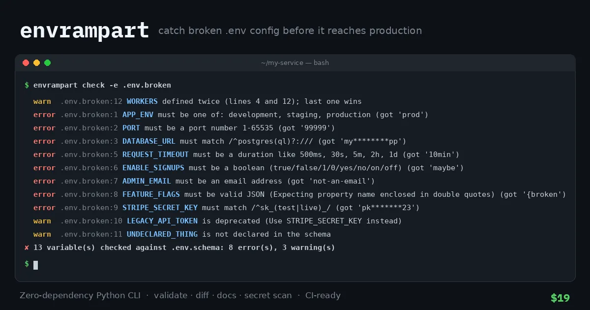

Dev Tools
envrampart: .env Validator & Secret Scanner CLI
A zero-dependency CLI that checks your .env files against a simple schema, keeps .env.example and config docs in sync, and catches real secrets before they get committed.
one-time; team license, up to 10 developers
Instant download, no sign-up. Free during launch.
License: Unlimited personal, commercial, and client projects. You may vendor it into your repos and container images. You may not resell or republish the tool itself. One purchase covers up to 10 developers.
Description
Catch broken .env config before it reaches production.
A missing DATABASE_URL, PORT=99999, DEBUG=maybe, or a live API key pasted into .env.example can each cause a failed deploy or a security incident. envrampart checks your env files against a small, readable schema in under a second: on your laptop, in CI, or when your container starts. It reports every problem with the file and line number and masks secret values.
It's one small Python package that uses only the standard library. There is nothing to add to your lockfile, no supply-chain risk, and it works with any stack that reads a .env file: Node, Go, Rails, Django, Laravel, or Docker Compose.
Features
- Validate:
envrampart checkhandles 13 types (string, int, float, bool, port, url, email, host, path, enum, json, duration, list) withrequired,default,choices,pattern,min/max,secretanddeprecated - Layered and 12-factor friendly: combine
-e .env -e .env.local, let real environment variables override, and use--strictto reject undeclared keys - CI-ready: output as text, JSON, or GitHub annotations (
--format github) with clear exit codes - Bootstrap fast:
envrampart initcreates a schema from your existing.env.example, inferring types and flagging likely secrets - Stay in sync:
envrampart examplegenerates a safe.env.example, andenvrampart docsrenders a Markdown config table for your README - Compare environments:
envrampart diff staging.env prod.envshows missing or changed keys and never prints values - Stop leaks:
envrampart scanfinds real-looking AWS, GitHub, Stripe live, Slack, Google and OpenAI-style keys, private keys, and URLs with passwords - Strict parser:
export, both quote styles, escapes, multi-line values, trailing comments and duplicate-key warnings - Zero dependencies: Python 3.8+, Linux, macOS and Windows, 21 unit tests included
Quick usage
Describe your config, one line per variable:
# .env.schema
APP_ENV enum required choices=development|staging|production
PORT port default=8080
DATABASE_URL url required secret pattern=^postgres(ql)?:// # Primary database
WORKERS int min=1 max=64 default=4Then check it:
$ pip install ./envrampart-1.0.0
$ envrampart init .env.example # optional: generate a starter schema
$ envrampart check -e .env.broken # bundled broken example (output excerpt)
error .env.broken:1 APP_ENV must be one of: development, staging, production (got 'prod')
error .env.broken:2 PORT must be a port number 1-65535 (got '99999')
error .env.broken:3 DATABASE_URL must match /^postgres(ql)?:/// (got 'my********pp')
...
✘ 13 variable(s) checked against .env.schema: 8 error(s), 3 warning(s)Add it to GitHub Actions in two lines:
- run: python3 tools/envrampart.py check --env .env.example --format github
- run: python3 tools/envrampart.py scan .env.exampleLicense summary
- ✅ Unlimited personal, commercial and client projects
- ✅ Modify it, and include it in your repos, CI pipelines and container images
- ✅ One purchase covers one person or a team of up to 10 developers
- ❌ Don't resell, republish, or redistribute the tool itself (for example on PyPI or a public repo)
- Provided as-is, with no warranty. The secret scanner uses heuristics.
© 2026 Persline Templates. No third-party dependencies.